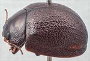
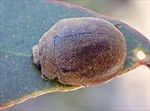
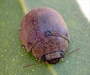
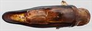
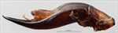
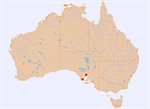

Click on images to enlarge


Male, Lincoln National Park, South Australia


Male, Whyalla, South Australia


Female, Whyalla, South Australia


Aedeagus, dorsal view (Lincoln N.P., Eyre Peninsula, South Australia)


Aedeagus, lateral view (Lincoln N.P., Eyre Peninsula, South Australia)


Distribution
Name
Trachymela sp. Ta124
Reference specimen
2011-010, Lincoln National Park, South Australia.
Adult Description
Length: ♂ 9.3–9.5 mm (n=2), ♀ 9.1–9.8 mm (n=2).
Colouration:
- Head: rear of head dark brown, clypeus even darker, almost black, with this dark shade extending towards rear of frons, labrum straw-brown, mandibles dark brown with black base and tips; antennomeres 1–3 straw-brown, 4–11 very slightly darker in shade, individual antennomeres with anterior edge darker.
- Pronotum: dark brown, concolorous with or fractionally darker than rear of head with anterior margin behind head fractionally darker, posterior half of lateral edge black.
- Scutellum: black.
- Elytra: dark brown, concolorous with disc of pronotum, punctures concolorous with interstices, elytral suture with a thin black border, humeral callus black.
- Venter & Legs: dark brown, with areas around the midline of thoracic segments often even darker, legs concolorous, inside surface of elytral epipleura brown or black.
- Cuticular Wax: a rather evenly distributed and moderate to thin layer of brown.
Morphology:
- Shape: quite evenly rounded and almost hemispherical (H/BL: ♂ 0.51, ♀ unknown), highest point in front of middle of elytral margin.
- Head: punctures relatively fine (pd ≈ 1.5–2.0 × ef) and quite evenly and densely distributed. Antennae moderately long (AL/BL: ♂ 39.2%, ♀ unknown), A4 < A3, filiform.
- Pronotum: almost evenly curved transversely, foveal depression weak with a very small foveal elevation, puncturation clearly impressed, similar in size to those on head, closely and rather evenly distributed, punctures becoming considerably coarser from inside margin of foveal area towards lateral margin. Front margins join lateral margins in a smoothly rounded right-angle, with lateral margin initially almost straight for about 20% of length, then curving smoothly and gradually towards the much thicker rear margin.
- Scutellum: surface slightly uneven, with a number of very shallow puncture-like depressions.
- Elytra: surface evenly curved, punctures distinct in anterior two-thirds, barely so in posterior third where they become lost in the closely-spaced granular interstices, relatively evenly distributed, a scatter of smaller punctures on the interstices, the raised interstices form a network of short, thin ridges throughout that give the surface a granular appearance, 4 longitudinal series of very small and inconspicuous, round verrucae are present on inner half of disc, surface discontinuous under humeral callus. Vertical extension of epipleura moderate (HCE/PW = 0.34).
- Venter: prosternal process narrowest anteriorly, closed anteriorly, short setae present sparsely over prosternal process and mesoventrite, one long seta on anterior and median trochanter, one on posterior trochanter; front edge of metaventrite beveled, truncate; posterior section of epipleura with a line of fine setae extending from opposite hind coxae to close to apex.
Male Genitalia (Aedeagus):
- Dimensions: very long, apical half prominently deflexed (LPE/BL = 47.8%).
- Dorsal view: shaft almost parallel-sided from basal sulcus to nearly 50% of distance to apex with sides smooth, from there the sides converge towards apex very slowly and slightly unevenly until just before tip, where the convergence becomes more rapid to form a triangular spatula, dorsal surface smoothly curved with a faint but long dorsomedian channel, dorsolateral channels also quite long and at lateral margins, dorsal ostial processes very large, ostial opening very large, tip strongly protruding.
- Lateral view: shaft curved slightly just anterior to basal sulcus, then almost straight to about 30% from apex where ventral surface is prominently deflexed and its thickness decreases towards apex, tip quite small and very slightly deflexed.
Immature Stages
Unknown.
Similar species
- Ta91: The texture of the sculpture of the elytral disc is very similar in these two species. However, Ta124 has black inner epipleura and a black clypeus.
Notes
- Taxonomy: Ta124 is a relatively large and almost uniformly dark brown species, a member of the alta-group of species, that is notable for the very long and prominently deflexed aedeagus of the male.
- Distribution & Abundance: This species has been found at just two locations on the Eyre Peninsula.
- Host Associations: At one location, several specimens were found on Eucalyptus gracilis (Symphyomyrtus: Bisectae), while just one specimen was found on Eucalyptus conglobata conglobata (Symphyomyrtus: Dumaria) at the second location.
Copyright © 2026. All rights reserved.